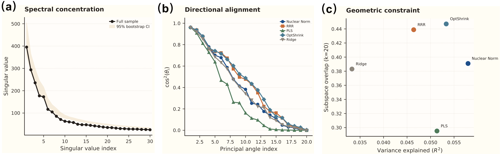
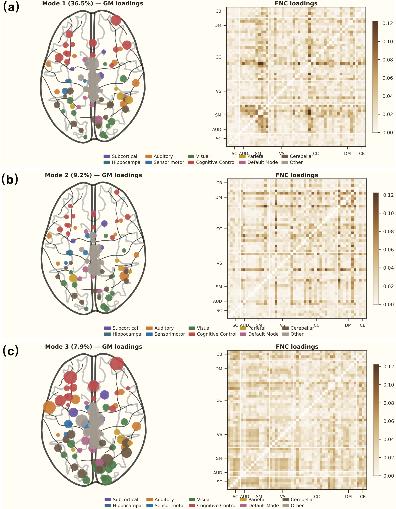

Structure Sets the Stage: How Gray Matter Geometry Constrains Functional Brain Organization
structure-function coupling, gray matter, functional connectivity, brain networks, subspace alignment, spectral methods, neuroscience

The Paradox: Weak Prediction, Strong Geometry
A persistent puzzle in systems neuroscience: gray matter morphometry (regional volume, thickness, surface area) predicts functional network connectivity (FNC) poorly — typically explaining only a few percent of variance. This has led many to dismiss the structure-function relationship as negligible for gray matter, focusing attention on white-matter tractography instead.
But variance explained is the wrong metric. It measures whether structure predicts the amplitude of functional variation — how strongly each person’s connectivity deviates from the mean. A more fundamental question is whether structure predicts the directions — the coordinate axes along which functional variation occurs at all.
These are mathematically distinct quantities. A linear map \(\hat{Y} = XB\) from GM features (\(X \in \mathbb{R}^{N \times p}\)) to FNC (\(Y \in \mathbb{R}^{N \times q}\)) can have low \(R^2\) (weak amplitude prediction) while its coefficient matrix \(B\) has column space closely aligned with the dominant subspace of \(Y\) (strong directional alignment).
The Method: Nuclear Norm Regularization and SVD
To disentangle amplitude from geometry, we use a spectral regularization framework:
\[ \min_B \; \frac{1}{2N}\|Y - XB\|_F^2 + \lambda \|B\|_* \]
where \(\|B\|_* = \sum_i \sigma_i(B)\) is the nuclear norm — the tightest convex relaxation of matrix rank. This encourages the learned mapping to be low-rank, concentrating the structure-function relationship into a small number of principal modes.
The proximal step has a closed-form solution via soft singular value thresholding:
\[ B^{(t+1)} = U\,\mathrm{diag}\bigl((\sigma_i - \lambda/L)_+\bigr)\,V^\top \]
The SVD of the resulting coefficient matrix \(B = U\Sigma V^\top\) gives us:
- \(V\): the FNC directions most aligned with GM variation (the “stage geometry”)
- \(U\): the GM features driving each coupling mode (the “structural scaffolding”)
- \(\Sigma\): the coupling strength per mode (spectral concentration)
Measuring Directional Alignment: Subspace Overlap
To compare GM-selected functional directions with the dominant directions of FNC variation itself, we compute principal angles between two subspaces:
\[ \cos\theta_i = \sigma_i(V_1^\top V_2) \]
where \(V_1\) are the top-\(k\) right singular vectors of \(B\) (GM-selected directions) and \(V_2\) are the top-\(k\) PCA directions of FNC. The subspace overlap is:
\[ O(V_1, V_2) = \frac{1}{k}\sum_{i=1}^{k} \cos^2\theta_i \;\in [0, 1] \]
The Core Finding: \(O = 0.45\) vs. \(R^2 = 0.06\)
Across three datasets (schizophrenia cohort \(N=1{,}151\); external validation \(N=102\); UK Biobank \(N \approx 37{,}775\)):
| Metric | Value | Interpretation |
|---|---|---|
| Variance explained (\(R^2\)) | ~0.06 | GM weakly predicts FNC amplitudes |
| Subspace overlap (\(O\)) | 0.447 | GM strongly constrains FNC directions |
| Top 3 principal angle cosines | 0.97, 0.95, 0.86 | Near-perfect alignment in 3 dimensions |
| 4th principal angle | 0.28 | Sharp dropoff — concentrated coupling |
| Chance overlap (at \(k=20\)) | ~0.015 | Observed overlap is 30× above chance |
The gap is an order of magnitude. Gray matter does not determine how strongly individuals deviate from mean connectivity — but it strongly constrains in which directions that deviation can occur.
The analogy: anatomy sets the stage geometry; neural dynamics determine how the actors perform on that stage. The theater constrains the repertoire of possible plays without scripting any particular performance.
What the Coupling Modes Look Like

The SVD decomposition reveals interpretable structure-function coupling modes:
- Mode 1 (36.5% of coupled variance): A distributed pattern spanning cognitive control, sensorimotor, and visual domains. This is the dominant axis along which GM morphometry shapes functional organization.
- Mode 2 (9.2%): Concentrated in default mode and visual network interactions — reflecting the structural basis of resting-state network architecture.
- Mode 3 (7.9%): Captures cerebellar-cortical coupling patterns, highlighting the structural underpinning of cerebro-cerebellar communication.
These modes are highly stable across random seeds (correlation \(r > 0.9\) for the top 3) and replicate across datasets.
Linearity: The Coupling Really Is Linear
A critical finding: nonlinear models provide no reliable improvement over the linear nuclear norm solution.
- MLP (multilayer perceptron) gains +0.004 \(R^2\) on discovery data but reverses to −0.009 on external validation
- A nonlinear residual model performs worse than nuclear norm alone on both datasets
- When initialized from the linear solution, the MLP’s mixing parameter converges to \(\alpha = 0.60\), staying close to the linear regime
This linearity is not an assumption — it is an empirical finding validated across datasets. The structure-function relationship, at the population level, is well-captured by a linear, low-rank map.
Clinical Relevance: The Coupled Subspace Carries Disease Information
Decomposing each subject’s FNC into a structure-coupled component (\(y_\mathrm{coup} = V_r V_r^\top y\)) and a structure-uncoupled component (\(y_\mathrm{uncoup} = (I - V_r V_r^\top) y\)):
| Component | SZ classification AUC |
|---|---|
| Coupled FNC (rank 38) | 0.795 [0.726, 0.857] |
| Full FNC | 0.773 [0.712, 0.839] |
| Uncoupled FNC | 0.728 |
The structure-coupled component outperforms full FNC for schizophrenia classification. This means that the functional variation constrained by gray matter morphometry preferentially carries clinically relevant information — anatomical structure does not just constrain function; it constrains the clinically informative part of function.
Physical and Mathematical Significance
Why Nuclear Norm?
The nuclear norm \(\|B\|_*\) is the \(\ell_1\) norm of the singular value vector — it induces sparsity in the spectral domain just as LASSO induces sparsity in the coefficient domain. This is the natural regularizer when the underlying relationship is low-rank: it seeks the simplest (lowest effective rank) linear map consistent with the data.
In the landscape of regularization:
| Method | What it regularizes | Bias |
|---|---|---|
| Ridge (\(\|B\|_F^2\)) | Shrinks all singular values equally | Preserves rank, weakens all directions |
| PLS | Maximizes covariance in few components | Greedily selects modes, poor generalization |
| Nuclear Norm (\(\|B\|_*\)) | Soft-thresholds singular values | Suppresses weak modes, preserves strong ones |
Nuclear Norm achieves the highest external generalization (74% retention) vs. PLS (45%) precisely because it soft-thresholds rather than hard-truncates the spectral structure.
The Subspace Overlap as an Information-Geometric Quantity
The subspace overlap \(O(V_1, V_2)\) is the mean squared cosine of the principal angles — equivalently, it is the normalized Frobenius norm of the product of two orthogonal projections:
\[ O = \frac{1}{k}\|P_{V_1} P_{V_2}\|_F^2 \]
This has a natural interpretation in information geometry: it measures the fraction of “geometric information” shared between two low-dimensional representations of the same high-dimensional space. When \(O \gg R^2\), the two modalities share geometric structure (directional alignment) without sharing amplitude information — the hallmark of a soft constraint rather than a deterministic prediction.
Looking Ahead: The Multimodal Decomposition Program
This paper is the first in a planned three-paper series:
Paper 0 (this work): Establishes that GM constrains function through a shared low-rank subspace, not pointwise prediction. Introduces nuclear norm regularization and the \(O \gg R^2\) diagnostic.
Paper 1 (in preparation): Asks whether gray matter and white matter constrain the same or different functional subspaces. Uses two-stage subspace decomposition to partition functional variance into four components:
\[ f_i = f_i^{(g \cap w)} + f_i^{(g \setminus w)} + f_i^{(w \setminus g)} + f_i^{(\mathrm{res})} \]
Key question: is the GM–WM functional overlap redundant or complementary? Data: UK Biobank (\(N \approx 30{,}000\); sMRI + dMRI + resting fMRI).
Paper 2 (planned): Unified probabilistic framework with joint latent variables, non-Gaussian priors for identifiability, and posterior uncertainty on the variance decomposition. Connects to ICA/IVA frameworks (Adalı) and Bayesian ARD for automatic dimensionality selection.
Paper
Yuda Bi, Vince D. Calhoun. Gray Matter Morphometry Reveals a Soft Low-Rank Structure-Function Subspace. In preparation for NeuroImage.